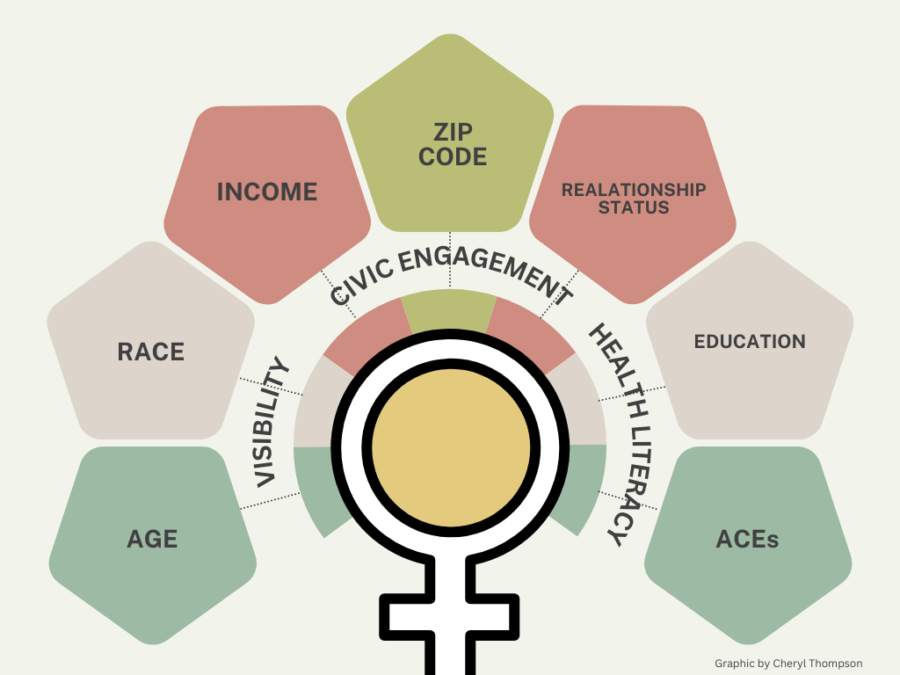

It is August 2024, and women in the United States have some highly consequential decisions to make around the leadership for the future of this county and about personal choices for our health and wellbeing. Most of the time IAWH focuses on the clinical, physical/mental health of women. This month we are stepping back a few paces to examine how we live - the circumstances and context that create our health outcomes and health status – the social determinants of women’s health. We are mothers, daughters, sisters, wives, partners, and always caregivers. Sure, we can ask if you’ve already had or plan to schedule your well woman visit for this year, but when was the last time that you were thoughtful about your health status? What are the factors that contribute to your individual health outcomes?
Social Determinants of Women's Health are a complex interplay of factors that can significantly impact both the physical and mental well-being of women 1. Income level, race, age, where we live, our level of education, relationship status, our exposure to adverse childhood experiences (ACEs), our visibility in the community and society, our civic engagement, and our health literacy are major determinants of our health 2. How we negotiate and manage these factors of our lives can determine our health status and life expectancy. This constellation of determinants do not exist isolated in a vacuum, rather each factor interacts with other factors at the same time, creating the ever-present, always changing, but perpetual background and music of our lives 2.
Income, Race, Age
(Has age, race, and income ever impacted your health?)
Age, race, and income level are significant social determinants that can have profound impacts on our health. Studies have shown that these factors can influence our access to healthcare, the quality of care we receive, and our overall health outcomes. For instance, socio-economic disparities often result in differences in the prevalence of certain health conditions such as hypertension, type-2 diabetes, high cholesterol, many preventable infectious diseases, and the effectiveness of treatments 3.
Hypertension Prevalence by Income Level -
- Low-Income Women: The prevalence of hypertension among adults with household incomes less than 200% of the Federal Poverty Line (FPL) is approximately 32% 4.
- Middle-Income Women: The prevalence of hypertension among adults with household incomes equal to or greater than 400% of the FPL is approximately 26% 4.
Type 2 Diabetes Prevalence by Income Level -
- Low-Income Women: Approximately 20% of women with household incomes less than 130% of the Federal Poverty Level (FPL) are diagnosed with diabetes 4.
- Middle-Income Women: The prevalence of diabetes among women with household incomes between 200% and 400% of the FPL is approximately 12% 4.
COVID-19 Prevalence by Income Level
- Low-Income Women: Approximately 35% of non-elderly adults with household incomes below $15,000 are at higher risk of serious illness if infected with COVID-19 4.
- Middle-Income Women: Adults with household incomes greater than $50,000 have a lower risk, with about 16% at higher risk of serious illness if infected with COVID-19 4.
Women from lower-income backgrounds may experience barriers to accessing healthcare, often leading to delayed diagnoses and treatment. How many times have we heard, “if only they had caught the cancer earlier.” “She had high blood pressure.” “She might lose her toes or her foot.” Financial instability can limit access to nutritious food, safe housing, and quality healthcare, directly influencing women's physical health and increasing stress levels, which can exacerbate mental health challenges.
Additionally, racial and ethnic disparities can contribute to different health challenges and outcomes. Minority groups often face higher rates of certain diseases and lower life expectancy. 5.
- Black Women: Approximately 20% of Black women report being in fair or poor health, and they face significant barriers to accessing healthcare. They are nearly three times more likely to die from pregnancy-related complications compared to White women 6.
- Hispanic Women: About 19% of Hispanic women report being in fair or poor health. They also face challenges in accessing healthcare services, often due to language barriers and lack of insurance 6.
- White Women: Around 12% of White women report being in fair or poor health. They generally have better access to healthcare services compared to minority groups 6.
- Asian Women: Only 9% of Asian women report being in fair or poor health, indicating relatively better access to healthcare services 6.
Race can further compound these health issues, with women of color often facing systemic barriers such as implicit biases that get expressed in the quality of care delivered and received, lack of or limited access to healthcare, leading to disparities in health outcomes. Here are a few examples:
-
Cardiovascular Interventions - Non-white patients, including women, receive fewer cardiovascular interventions compared to their white counterparts. This disparity can lead to worse health outcomes for women of color 14.
-
Pain Management - Non-white patients, including women, are less likely to be prescribed pain medications, both non-narcotic and narcotic. This can result in inadequate pain management and poorer overall health outcomes 14.
-
Maternal Mortality - The maternal mortality rate for Black women is more than three times higher than that for white women. Implicit bias and systemic racism in healthcare contribute to this alarming disparity. A notable example is tennis star Serena Williams, who nearly died from a pulmonary embolism during childbirth after her concerns were initially ignored by medical staff 14,15.
Age also plays a crucial role, as health risks increase with age. As we get older, we can face unique health issues such as endometriosis, uterine fibroids, maternal health challenges, menopause, an increased risk of osteoporosis, and heart disease 7,8.
Where we Live –
(Have you ever thought about where you grew up – what city – what part of town? What were the circumstances that made you live where you lived as a child? How did you choose where you currently live? Did your health and life expectancy factor into that decision?)
Where we live can significantly impact our health outcomes. A zip code can be a predictor of health outcomes. All neighborhoods and communities are not and were not created equal. For example, a child born in New Orleans can vary as much as 25 years between neighborhoods just a few miles apart. In Boston, the Census tract with the lowest life expectancy, 58.9 years, is located in
Roxbury 16. Why is that? A number of factors play a role in this stark difference in life opportunity. Largely segregated neighborhoods can indicate greater levels of unemployment, less access to high-quality preventive healthcare, unstable housing, generations of poverty and unwell, less access to healthier foods, safe spaces to play, workout, and just exist, away from violence, drugs, and economic stress 17. Altogether this can create a sense of generational “learned ‘healthlessness’”.
-
Urban andRural - Where we live, whether in urban or rural communities, access to health care can be very different. In more isolated rural areas of the country, there could be over 100 miles between you and a hospital or medical office, there may be fewer healthcare facilities to serve a community, public transportation may be limited, and service hours restricted. Whether urban or rural, access to nutritious food and food deserts are possible and safe spaces for movement and recreation may be non-existent. All of these factors can lead to poorer health and shorter lifespans .
-
Environmental factors can have an impact on our health, even more so as the climate changes and we are exposed to more extreme weather emergencies, wildfires, poor air quality, toxins, and lack of green spaces. Areas with higher pollution levels and fewer green spaces are associated with increased rates of respiratory diseases, cardiovascular conditions, and mental health issues.
-
Economic Investment - Communities with strong economic investment and infrastructure tend to have better health outcomes. Investments in community development, such as building hospitals and improving public services like community libraries, neighborhood recreation facilities, grocery and other stores, dedicated park spaces, can lead to healthier populations.
-
Social and Built Environment - The social and built environment, including the quality of housing, availability of healthy food options, and safety of neighborhoods, plays a crucial role in determining health outcomes. Up to 60% of health is determined by these factors rather than your heredity 16.
On Relationships -
As the country ponders unscientific accusations, ignorant assumptions, and mindless musings about the societal value of single women, childless women, post-menopausal women, marriage, and investment in the future, there are some interesting more evidence-based facts about women’s relationship status and our health.
Studies have shown that women engaged in long-term, committed non-platonic relationships can experience positive effects on health outcomes, including mental health, but do also experience stress. Some data show that these relationships increase the likelihood of sharing the burden of managing everything from the mundane of housework to the more impactful job of child rearing. Women in relationships can use that relationship to share emotions and burdens ostensibly having a dedicated someone in their corner. And there is the data that suggests that women in committed relationships are more likely to health insurance coverage. Conversely, women who are single, divorced, or widowed may experience different stressors than women in long-term committed relationships and have a different set of social supports, affecting both their physical and mental health. These factoids will certainly generate discussion and we will soon open our online forum to hear from you.
Education Level -
Here are the facts. Higher education levels are associated with better well-being, but do not inoculate women from poor health outcomes. Reduced psychological distress, and healthier behaviors can mediate the connection between education and health. Furthermore, maternal education is linked to lower maternal mortality and better health outcomes for offspring 18.
Adverse Childhood Events (ACEs) -
Adverse Childhood Experiences (ACEs) are potentially traumatic events that occur during childhood (0-17 years) 9. These events can include experiencing violence, abuse, or neglect, witnessing violence in the home or community, having a family member attempt or die by homicide or suicide, growing up in a household with substance use problems, mental health issues, or instability due to parental separation or incarceration 10. The toxic stress from ACEs can change brain development and affect how the body responds to stress, leading to long-term health issues 11. ACEs experienced as children can have long-term impacts on our adult health, impact how we interface with opportunity, and our overall well-being. ACEs can be linked to chronic health problems, mental illness, and substance misuse in adulthood. Preventing ACEs can help children and adults thrive by reducing the risk of conditions like depression, asthma, cancer, and diabetes 11.
In an evaluation, each ACE is assigned a numerical value and scores. To learn more about ACEs and how they are scored in evaluation, see the resources from the Center for Disease Control and Prevention below. Women with higher ACE scores are more likely to face pregnancy complications, gestational diabetes, and high blood pressure, and their children are at greater risk for developmental delays. Addressing these factors comprehensively is essential for improving women's health outcomes and developing and maintaining well-being across the lifespan 11.
Social Visibility and Civic Engagement -
A woman’s social visibility and civic engagement, or the extent to which she is seen and recognized in society, can significantly impact her health outcomes in various ways. Women who are more socially visible are often better able to advocate for themselves and access healthcare services. This can lead to earlier detection and treatment of health issues. Social visibility can influence mental health positively by providing a sense of belonging and support. Women who are active in their communities and have strong social networks are less likely to experience depression and anxiety. Conversely, lack of social visibility can lead to feelings of isolation and loneliness, which negatively impact mental health. Social visibility can challenge and change harmful cultural and gender norms that negatively impact women’s health. By being visible and vocal, women can advocate for policies and practices that promote gender equality and better health outcomes 19.
Health Literacy -
Health literacy plays a crucial role in our health by influencing her ability to understand and use health information to make informed decisions and advocate for others 12. Women with higher health literacy are better prepared to weigh their treatment options, weed out misinformation, and more likely to engage in preventive health behaviors, such as regular screenings and vaccinations. A study found that health literacy, self-efficacy, and cues to action significantly predicted preventive behaviors among women. Health literacy contributes to women’s empowerment by enabling them to adopt healthier behaviors and have greater control over their bodies 13.
In conclusion, it is always important for us to be able to understand our health status based on our numbers, knowing how to read and interpret systolic and diastolic blood pressure, hemoglobin a1c, and body mass index (BMI), but these numbers are not the only data available to us. It is also equally if not more important that we understand and appreciate the context in which these data exist. This means understanding our health status based on who we are by age, race, and income, where we live in relationship with quality of life factors such as air quality, physical safety, available/affordable healthy food, our relationships with others and our community, events that we may have experienced in childhood that could have a lingering impact, and our ability to understand and use health information to make informed decisions and advocate for others. The Institute for the Advancement of Women's Health strongly encourages you to spend quality time exploring the social determinants of your personal health.
References:
- The Social Context of Women’s Health
https://bmcwomenshealth.biomedcentral.com/articles/10.1186/1472-6874-4-S1-S2
- Closing the women’s health gap: A $1 trillion opportunity to improve lives and economies
- Epi Data Brief
https://www.nyc.gov/assets/doh/downloads/pdf/epi/databrief135.pdf
- Percentage of adults in the U.S. with diabetes from 2017 to March 2020, by family income relative to federal poverty level
https://www.statista.com/statistics/790678/diabetes-prevalence-us-by-income/
- Racial and Ethnic Differences in Social Determinants of Health and Health-Related Social Needs Among Adults — Behavioral Risk Factor Surveillance System, United States, 2022
https://www.cdc.gov/mmwr/volumes/73/wr/mm7309a3.htm
- Low-Income and Communities of Color at Higher Risk of Serious Illness if Infected with Coronavirus
- Differences in Health Care Access and Use by Gender, Race, Income, Age and Employment among Residents of the Rural South
https://muse.jhu.edu/article/882024
- US Women Face Worst Health Access, Outcomes Among High-Income Nations
https://www.ajmc.com/view/us-women-face-worst-health-access-outcomes-among-high-income-nations
- Adverse Childhood Experiences (ACEs) Preventing early trauma to improve adult health
https://www.cdc.gov/vitalsigns/aces/index.html
- About Adverse Childhood Experiences
https://www.cdc.gov/aces/about/index.html
- Everything you need to know about adverse childhood experiences
https://www.medicalnewstoday.com/articles/adverse-childhood-experiences
- The role of health beliefs and health literacy in women's health promoting behaviours based on the health belief model: a descriptive study
https://bmcwomenshealth.biomedcentral.com/articles/10.1186/s12905-021-01564-2
- Importance of Social Determinants of Health and Cultural Awareness in the Delivery of Reproductive Health Care
-
Quick Safety 23: Implicit bias in health care https://www.jointcommission.org/resources/news-and-multimedia/newsletters/newsletters/quick-safety/quick-safety-issue-23-implicit-bias-in-health-care/implicit-bias-in-health-care/
-
What is implicit bias? The invisible racism that makes Black women dread the doctor's office
https://www.today.com/health/what-implicit-bias-invisible-racism-hurts-black-women-doctor-s-t189105
-
"Defeating The ZIP Code Health Paradigm: Data, Technology, And Collaboration Are Key", Health Affairs Blog, August 6, 2015. https://www.healthaffairs.org/content/forefront/defeating-zip-code-health-paradigm-data-technology-and-collaboration-key
-
Your Zip Code is More Important than Your Genetic Code
https://ncrc.org/your-zip-code-is-more-important-than-your-genetic-code/
- What you need to know about education for health and well-being
https://www.unesco.org/en/health-education/need-know
- Women’s health outcomes: Is there a gender gap?
https://lordslibrary.parliament.uk/womens-health-outcomes-is-there-a-gender-gap/
Cheryl J. Thompson, MSPHCo-Director, IAWH
This article first appeared on the IAWH Health blog on August 20, 2024 and is preserved here as part of the IAWH Health Journal archive. Information reflects what was known at the time of publication. This article is for general education and is not medical advice. Has unpublished edits in Wix; the editor shows the edited version, which may differ from what was live.